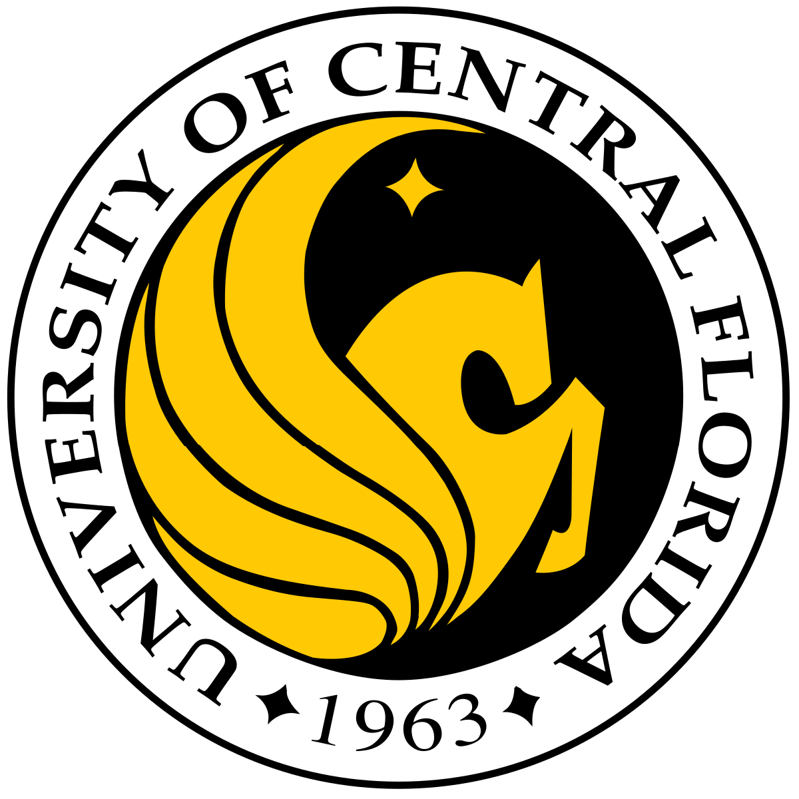
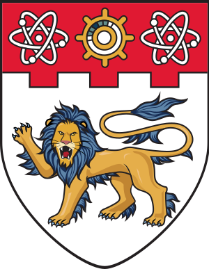
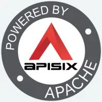

Biography
Education
|
|
Rutgers University–New Brunswick
|
Victoria University
|
|
|
Henan University
|
Selected Experience
|  | University of Central Florida
|
|
|
University of Texas at Dallas
|
|  | Nanyang Technological University
|
|  | Apache Software Foundaiton
|
All News
- 2024.6 I got the Best Bachelor's Thesis award of Henan University.
- 2024.2 I have received the offer of dream advisor and will start my doctoral career.
- 2023.10 An article was accepted by EMNLP MRL.
- 2023.9 As Intern of Prof @陈宸(Chen Chen) to explore the large language model of sign language. He is a professor from UCF(Top10 CV@CS-ranking) with over 18,000 citations, the top 2% of scientists in the world.
- 2023.8 One of my articles was accepted by ICONIP, the flagship conference of APNNS!
- 2023.2 Started sign language production work under the guidance of Prof @田亚鹏(Yapeng Tian) from UTD, over 10,000 citations, SPC/AC of Top-level conferences, such as CVPR/AAAI and the author of 'Residual Dense Network for Image Super-Resolution'.
- 2022.7 As a study researcher of Prof @张德道(TeikToe Teoh), joined NTU in Summer research.
- 2022.6 As a student of mentor @杨陶(SkyeYoung), joined APISIX in OSPP 2022, who is an Apache member of the top project with over 10,000 stars.
- 2022.2 Completed 2 months of Bytedance youth-camp as a team captain.
- 2021.9 Completed 2 months of ACM training.